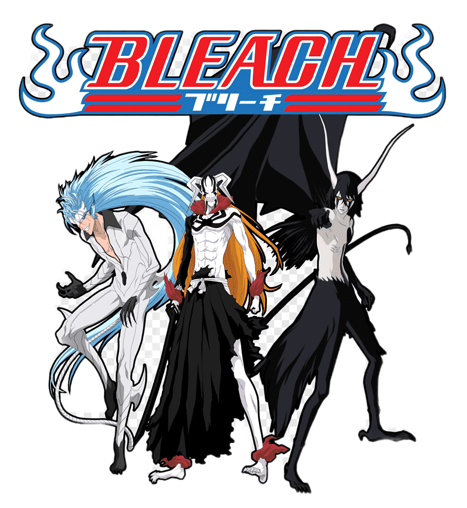

ONE PIECE

"One Piece" is a legendary anime series that follows the adventures of Monkey D. Luffy
and his crew as they search for the ultimate treasure, the One Piece.
Set in a fantastical world of pirates, the series combines action, humor, and
deep emotional moments to create an unforgettable journey. With over 1,000 episodes,
One Piece has captivated audiences worldwide with its rich storytelling and unique characters.
NARUTO

"Naruto" is a beloved anime series that tells the story of Naruto Uzumaki,
a young ninja with a dream of becoming the Hokage, the strongest ninja in his village.
Despite facing many hardships and prejudices, Naruto's indomitable spirit and
determination inspire those around him. The series is renowned for its compelling characters,
deep lore, and epic battles.
BLEACH

"Bleach" is an anime series that revolves around Ichigo Kurosaki,
a teenager with the ability to see ghosts. His life changes when he encounters Rukia Kuchiki,
a Soul Reaper. Ichigo gains Soul Reaper powers and is thrust into the world of Hollows, spirits,
and the afterlife. Bleach combines supernatural elements with high-stakes battles and
a gripping storyline.